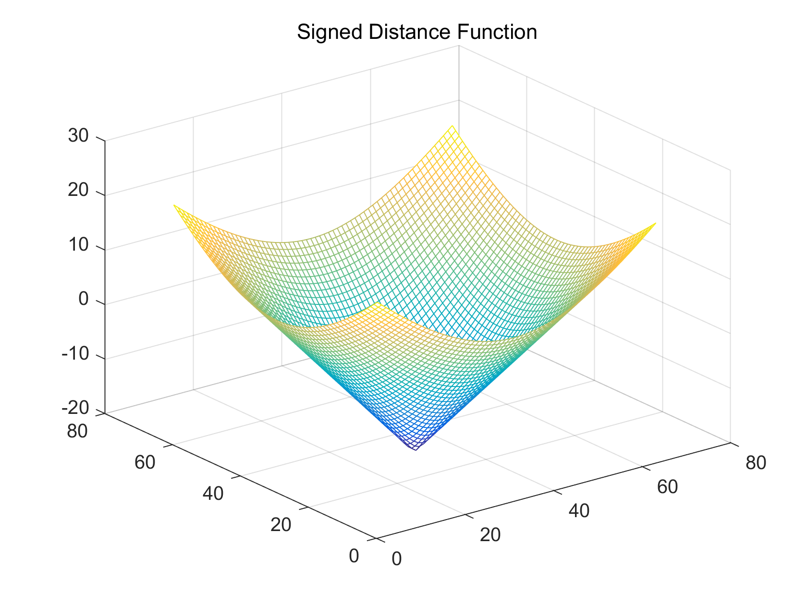
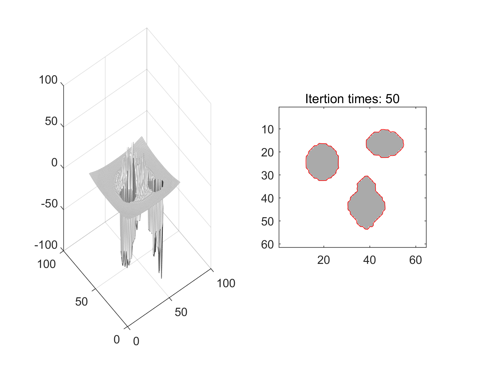

clear;
close all;
clc;
Img=imread('three.bmp');
U=Img(:,:,1);
[nrow,ncol] =size(U);
ic=nrow/2;
jc=ncol/2;
r=20;
phi_0 = sdf2circle(nrow,ncol,ic,jc,r);
figure; mesh(phi_0); title('Signed Distance Function')
delta_t = 0.1;
lambda_1=1;
lambda_2=1;
nu=0;
h = 1;
epsilon = 1;
mu = 100;
I=double(U);
phi=phi_0;
figure(2);
subplot(1,2,1); mesh(phi);
subplot(1,2,2); imagesc(uint8(I));colormap(gray)
hold on;
plotLevelSet(phi,0,'r');
numIter = 1;
for k=1:50,
phi = evolution_cv(I, phi, mu, nu, lambda_1, lambda_2, delta_t, epsilon, numIter);
if mod(k,2)==0
pause(.5);
figure(2); clc; axis equal;
title(sprintf('Itertion times: %d', k));
subplot(1,2,1); mesh(phi);
subplot(1,2,2); imagesc(uint8(I));colormap(gray)
hold on; plotLevelSet(phi,0,'r');
end
end;
 